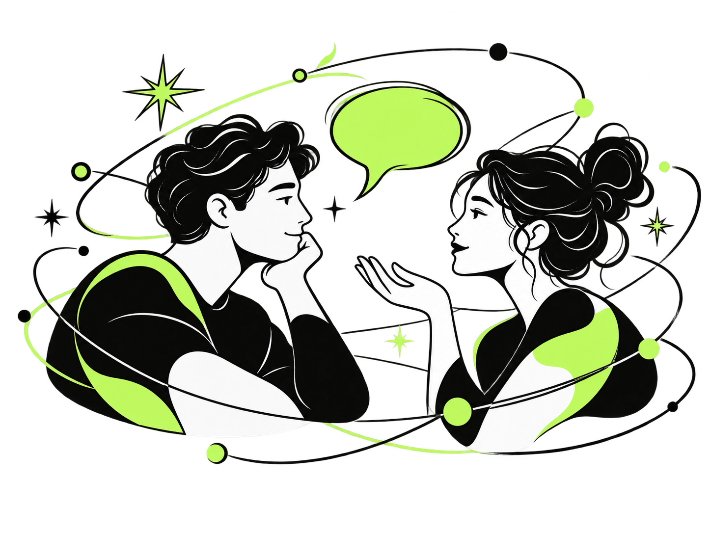

Пространство для разговора и поддержки
Психологический центр «Баланс» — пространство для консультаций. Специалисты помогают разобраться в переживаниях, отношениях и повторяющихся трудностях.
Узнать о направлениях
Направления
Семейная и клиническая психология, психотерапия, психоанализ, консультирование и гипнотерапия — направления, в которых работают специалисты.
Специалисты
Познакомьтесь со специалистами и направлениями их консультаций.
Анна Морозова
Семейный психолог
О специалистеДмитрий Соколов
Клинический психолог
О специалистеЕлена Волкова
Гипнотерапевт
О специалистеОнлайн-анкетирование
На сайте работает тест из 60 утверждений. Отдельная авторская анкета из 12 вопросов размещена в Google Forms.
Пройти тест Открыть анкету